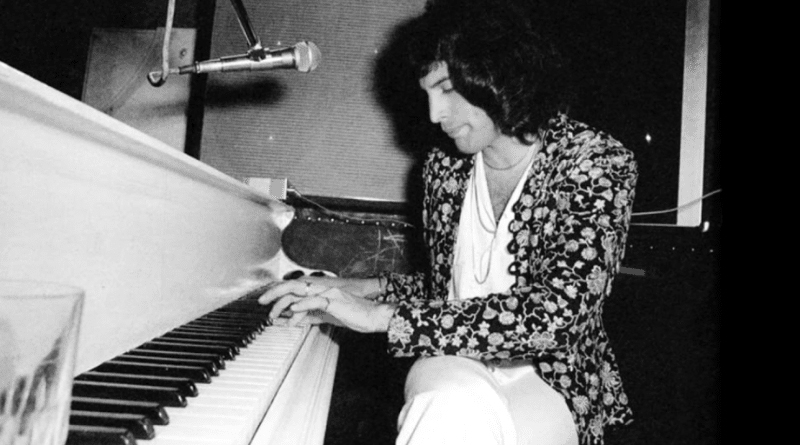

"When I'm dead, I want to be remembered as a musician of some worth and substance."
Freddie Mercury's career highlights
Early life
Freddie Mercury (born Farrokh Bulsara; 5 September 1946 – 24 November 1991) born in Zanzibar to Parsi-Indian parents. Mercury attended English-style boarding schools in India from the age of eight and returned to Zanzibar after secondary school. In 1964, his family fled the Zanzibar Revolution, moving to Middlesex, England.
Farrokh who?
During his youth, at school, the then Farrokh adopted the name Freddie to integrate socially.
The full stage name would only be formed years later in the song My Fairy King, which he
himself wrote in 1973. The lyrics include the passage that has "Mother Mercury". The “Mother”
in the song was inspired by his mom. Thus, he adopted the full name of Freddie Mercury.
Having studied and written music for years, he formed Queen in 1970
with guitarist Brian May and drummer Roger Taylor.
Astonishing vocals
His distinctive baritone voice, his ability to extend his three-octave vocal range with a
variety of vibrato and distortion techniques and his known vocal range extended from bass low
F (F2) to soprano high F (F6) enchants anyone. He could belt up to tenor high F (F5). Biographer David Bret
described his voice as escalating within a few bars from a deep, throaty rock-growl to
tender, vibrant tenor, then on to a high-pitched, perfect coloratura, pure and crystalline
in the upper reaches.
Spanish soprano Montserrat Caballé, with whom Mercury recorded an
album, expressed her opinion that the difference between Freddie and almost all the other
rock stars was that he was selling the voice.

Eclectic songwriter
Mercury wrote 10 of the 17 songs on Queen's Greatest Hits album: "Bohemian Rhapsody", "Seven Seas of Rhye", "Killer Queen", "Somebody to Love", "Good Old-Fashioned Lover Boy", "We Are the Champions", "Bicycle Race", "Don't Stop Me Now", "Crazy Little Thing Called Love", and "Play the Game". In 2003 Mercury was posthumously inducted into the Songwriters Hall of Fame with the rest of Queen, and in 2005 all four band members were awarded an Ivor Novello Award for Outstanding Song Collection from the British Academy of Songwriters, Composers, and Authors. Although Mercury often wrote very intricate harmonies, he claimed that he could barely read music. He wrote most of his songs on the piano and used a wide variety of key signatures.

Iconic artist on stage
Mercury was noted for his live performances, which were often delivered to stadium audiences around the world. He displayed a highly theatrical style that often evoked a great deal of participation from the crowd. Throughout his career, Mercury performed an estimated 700 concerts in countries around the world with Queen. A notable aspect of Queen concerts was the large scale involved. The band was the first ever to play in South American stadiums, breaking worldwide records for concert attendance in the Morumbi Stadium in São Paulo in 1981. In 1986, Queen also played behind the Iron Curtain when they performed to a crowd of 80,000 in Budapest, in what was one of the biggest rock concerts ever held in Eastern Europe. Mercury's final live performance with Queen took place on 9 August 1986 at Knebworth Park in England and drew an attendance estimated as high as 200,000. With the British national anthem "God Save the Queen" playing at the end of the concert, Mercury's final act on stage saw him draped in a robe, holding a golden crown aloft, bidding farewell to the crowd.
Studio Albums
- Queen (1973)
- Queen II (1974)
- Sheer Heart Attack (1974)
- A Night at the Opera (1975)
- A Day at the Races (1976)
- News os the Worl (1977)
- Jazz (1978)
- The Game (1980)
- Flash Gordon (1980)
- Hot Space (1982)
- The Works (1984)
- A Kind of Magic (1986)
- The Miracle (1989)
- Innuendo (1991)
- Made in Heaven (1995)